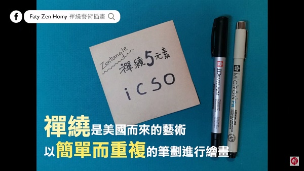
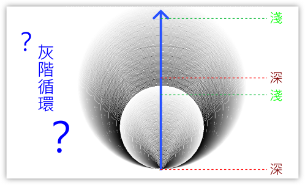

📚海龜畫禪繞
- 禪繞畫是由美國的芮克（Rick Roberts）與瑪莉亞（Maria Thomas）這對夫妻於2005年創辦。畫法是以簡單的圖樣規則一筆一筆畫出。在禪繞畫的作畫過程中，可以讓人保持、放鬆、專注與平靜，是一種人人都可從事的繪畫活動。
- (資料來源:1)
- 雖然禪繞畫大多是以紙與筆來完成(紙磚、代針筆、2B鉛筆等)，不過禪繞畫的特點之一是「沒有框架丶可自由創作」，所以在這個課程中，我們會跳脫框架，使用海龜程式來畫出禪繞圖，試試看當科技與藝術結合時，會產生怎樣的火花。
關於海龜程式
- Py4t海龜程式的介紹，加上中文的函式庫、範例程式與原始碼。
- 海龜學習模組 說明
📙 禪繞特性
- 禪繞畫看起來很美麗，但卻好像有點複雜，要如何畫出禪繞畫？它的特性是什麼？
- (6分03秒, 資料來源:2)
-
禪繞畫是由多個圖樣組成，從影片中，我們可以看到幾種常見的圖樣。(也可以自己創造哦)
-
(資料來源:2)
-
在作畫時也會使用到填滿及陰影的技巧，讓畫面更有層次感。
-

-
(資料來源:2)
-
禪繞畫會依照圖樣的簡單規則來重複畫出。禪繞筆劃的5個元素簡稱icso，分別代表點、直線、弧線、S型、圓形。
-

-
(資料來源:3)
-
經由以上的簡介，大家是不是比較了解禪繞畫了呢？
-
原來禪繞畫的特性有「禪繞5元素」、「圖樣規則」、「重複畫出」、「填滿及陰影」等。
-
接下來要使用海龜程式，從以上討論的特性，畫出禪繞畫囉。
📗 迴轉線條(4)
方陣擴大
- 先使用禪繞5元素中的「直線」來發想，規律的直線可以產生什麼基本圖樣呢？
- 當一條直線，以90度的規律轉動，會變成一個直角，而4個規律的直角會讓人聯想到正方形。

-
在海龜程式中，從起點開始，一開始的方向朝右，利用「向前」及「旋轉」的指令，就可以畫出正方形的圖樣。
-

-
接著使用禪繞畫中的「重複畫出」要素，想一想，不斷重複畫出正方形的邊長，可以使用什麼規則變化？
-
利用程式的重複結構，以Python的for迴圈為例，我們可以使用「迴圈變數」，它在重複結構中的作用像是圈數計數器(從0開始)。如果把迴圈變數做為正方形的邊長時，就會產生一個不斷迴轉擴大的方陣，如下示意圖。
請動手實作，畫出不斷擴大的方陣。
範例程式 方陣擴大 - - - - - - - (迴轉線條1/4 新檔)
【長度2:30 章節時間如下】
-
0:00 存檔、匯入模組
-
0:50 方陣擴大

長度迭代
- 在資訊科學的領域，迭代(iteration)代表著重複的指令執行。在Python中，雖然迭代與迴圈(loop)的意義相近，但「迭代」更有利用迴圈變數「不斷重複替換」來做出變化之意，所以以下的重複替換變化都會使用「迭代」這個詞。
- 回想上一個例子，我們對正方形的長度迭代，不斷的把線條變長，產生方陣的圖案。如果使用乘法或加法，讓迴圈變數產生規律的變化時，方陣會發生什麼事情呢？分別來測試看看。
- 測試一，把迴圈變數每次都變成2倍，方陣會如何？：

-
測試二，把迴圈變數每次都加上50，方陣又會如何？
-
試著動手實作，利用不同的長度迭代變化，畫出不同的方陣圖案。
範例程式 長度迭代 - - - - - - - (迴轉線條2/4 接續)
【長度1:56 章節時間如下】
- 2:35 長度迭代

角度迭代
- 接下來，我們來試試對角度做迭代的變化，先來思考角度與正方形的關係。
- 正方形的轉角是90度。而海龜程式畫出正方形時，其實都會以一樣的角度回到起點。所以正方形可以想成是海龜「轉一圈分成4次」。那在正5邊形或正6邊形又是如何呢？

- 有了以上的規則，是不是可以畫出各種正多邊形的圖樣了呢！
-
另一種想法是，讓角度迭代產生細微的差異。
-
以方陣擴大為例，想一想，如果每次轉的角度是90-1度，那方陣會產生什麼變化？
-
思考畫出來圖案，是不是由每次細微的轉角差異，不斷累積出來的呢？
-
試著動手實作，利用不同的角度迭代變化，畫出不同的方陣圖案。
範例程式 角度迭代 - - - - - - - (迴轉線條3/4 接續)
【長度2:01 章節時間如下】
- 4:33 角度迭代

玩轉禪繞
- 了解了以上的迭代變化後，就可以使用不同的「重複次數」、「長度規則」、「角度規則」來產生禪繞畫了。以下兩個例子做為參考。
- 範例禪繞畫一：

-
範例禪繞畫二：(看起來像什麼？)
-
請動手實作，改變「重複」、「長度」、「角度」的規則，畫出獨一無二的「迴轉線條」禪繞畫。
範例程式 玩轉禪繞 - - - - - - - (迴轉線條4/4 接續)
【長度2:17 章節時間如下】
- 6:38 玩轉禪繞
📘 花樣圓圈(4)
圓圈與角度迭代
- 接下來，使用禪繞5元素中的「圓形」來發想，規律的圓形可以產生什麼樣的禪繞圖呢？
- 海龜學習函式庫提供了「畫圓」的功能，讓我們方便地畫出圓圈。

-
圓圈與圓圈部份重疊時，兩圓重疊之處稱為交集，它的形狀看起來像是葉子形狀，也像是花瓣的形狀。
-

-
當我們利用迴圈產生多個圓圈，而每個圓圈之間以固定的轉角做為規則，就會產生圓圈重複畫的效果。少量的圓圈交錯會有花瓣形狀出現，較多的圓圈交錯則會產生更複雜的變化。
-

-
請動手實作看看。
範例程式 圓圈與角度迭代 - - - - - - - (花樣圓圈1/4 新檔)
【長度3:14 章節時間如下】
-
0:00 存檔、匯入模組
-
0:46 圓圈與角度迭代

半徑迭代
- 不同的圓圈，也可以經由半徑迭代的規律，產生圓中之圓的圖案。
-
動手實作看看。
範例程式 半徑迭代 - - - - - - - (花樣圓圈2/4 接續)
【長度2:42 章節時間如下】
- 3:20 半徑迭代

灰階迭代與循環
- 禪繞畫的特性之一，是以鉛筆呈現光影深淺的變化，那在海龜程式中，要怎樣才能做出來呢？
- 在資訊科學中，灰階影像代表顏色從黑色到白色之間的多種變化，類似黑白照片的效果。以常見的8位元取樣影像，灰階值0代表不發光的黑色，255代表最亮的白，而中間的數值則會呈現各種灰度。

- 如上圖，利用灰階迭代可以用來做出深淺筆劃的效果，如果同時與半徑迭代搭配的話，更能產生特別的效果呢！
-
如果想更進一步，讓灰階顏色可以從「深到淺」，再從「深到淺」這樣的循環變化，要怎麼做呢？
-

-
% 這個符號在Python中，代表「除法取餘數」的運算，觀察下圖中的運算變化：
-

-
原來如此，使用 % 的運算，就可以讓規律的數列產生循環的效果了。
-
試著找出灰階循環的樣式規則，以2次的灰階循環為例：
-

-
在以上的樣式規則中，「乘以2」代表2次的灰階循環，而「乘以4」則代表4次的灰階循環，這樣是不是可以做出多次的灰階循環了呢！。
-
請動手實作程式看看。
範例程式 灰階迭代與循環 - - - - - - - (花樣圓圈3/4 接續)
【長度2:57 章節時間如下】
- 4:26 灰階迭代與循環

玩轉禪繞
- 了解了以上的圓形各種迭代變化後，就可以使用不同的「重複次數」、「半徑規則」、「角度規則」、「灰階規則」來產生禪繞畫了。以下是兩個參考的例子。
- 範例禪繞畫一：

-
範例禪繞畫二：(加上向前的規則)
請做出屬於你的禪繞圖變化。
範例程式 玩轉禪繞 - - - - - - - (花樣圓圈4/4 接續)
【長度2:56 章節時間如下】
- 7:27 玩轉禪繞

📙 未來展望：數位藝術
- 經過上面的例子，你是否感受到程式與禪繞畫結合的樂趣呢？
- 若是對這個方式感到興趣，你可以再更進一步探索程式與藝術的結合，以下提供一些些資源讓你自行探索：
-
(感謝桃園市桃園區建國國小鄭老師提供資訊與方向)
待建構 - 點點螺旋